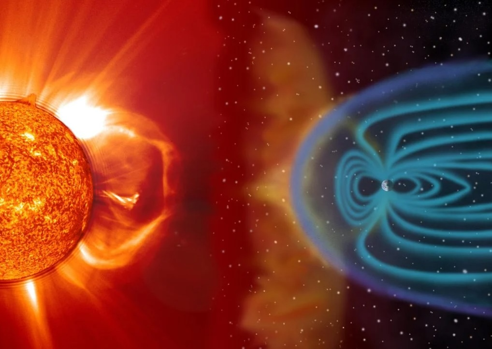
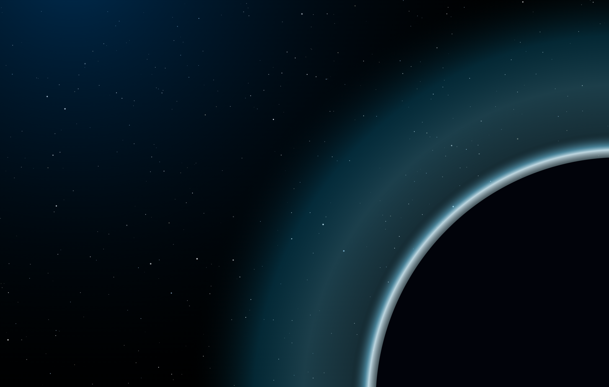
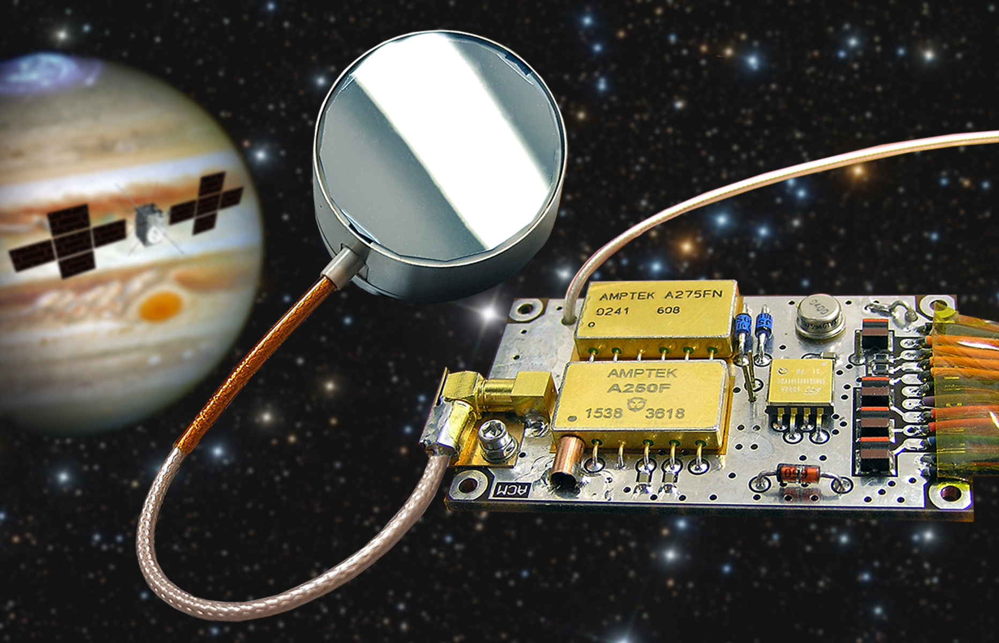

SPACE Science
Exploring phenomena invisible to the human eye with state-of-the-art technologies, including machine learning, in close cooperation with ESA.

Department of Space Physics · Institute of Experimental Physics · Slovak Academy of Sciences · Košice, Slovakia

Exploring phenomena invisible to the human eye with state-of-the-art technologies, including machine learning, in close cooperation with ESA.

Delivery of 25+ scientific instruments for space missions — from Rosetta and BepiColombo to ESA's JUICE.

More than 50 years of continuous cosmic ray measurements at Lomnický štít — one of the longest records on Earth.
Join our community in Košice. Come to the SPACE::TALK meetup, attend our summer school, or join the research project.